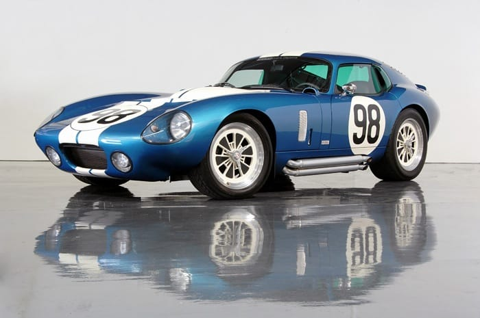

Film Retriever

Замутил из баночки с витаминками фильм-ретривер (замотавшийся кончик пленки вытаскивать), работает как часы прототип.
Замутил из баночки с витаминками фильм-ретривер (замотавшийся кончик пленки вытаскивать), работает как часы прототип.
Таймлапс про облака.
Нашел апп, который знает как что бодяжить, и сколько какую пленку проявлять!
О, это же Маркет-стрит!

А вообще это был пост про луну.
История фотографии.
Time you enjoy wasting is not wasted time. — Bertrand Russel
А мне вспомнился Пахом :)

А какую крутую штуку в Севилье построили!
А 98 штука (из "101 Things I Learned in Architecture School") про кризис:
The Chinese symbol for crisis is comprised of two characters: one indicating "danger", the other, "opportunity".
Update: fake!

Какая тачка!
Каждый раз, когда я смотрю видео, в котором видно как вращается Земля, у меня захватывает дух.
И да, саундтрек с этого альбома, а таких альбомов у его автора не один!